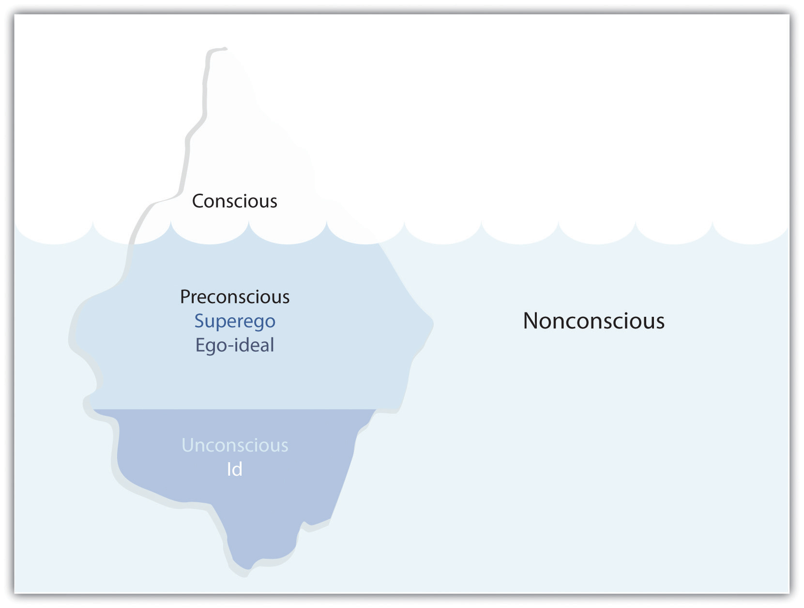

Photo by Max Halberstadt, 1922.
“Freud is inescapable. It may be a commonplace by now that we all speak Freud whether we know it or not, but the commonplace remains both true and important. Freud’s terminology and his essential ideas pervade contemporary ways of thinking about human feelings and conduct.” So writes Peter Gay, a recent biographer of Freud, in his introduction to The Freud Reader (1989).Peter Gay, "Introduction" in The Freud Reader, (New York: Norton, 1989) pg. xiii.
Gay is certainly correct: Freud is part of our everyday vocabulary: the “Oedipal complex” and “slips-of-the-tongue” are two Freudian concepts with which you are probably familiar already.
Freud’s legacy resides in his theory of human sexual development. He believes humans are driven by the pleasure principleThe driving force of all humans that centers on desire, particularly sexual desire., where sexual desires and aggressive behavior are controlled by the reality principleThe moral or social forces that provide a moral code and restrict the pleasure principle., the so-called restrictions we follow to conform to proper behavior. Consequently, our drive for unbridled pleasure is repressed by the reality principle and becomes sublimated or buried in the unconsciousThe part of our mind that is buried deep within consciousness and seeks outlets.. Initially, Freud categorized the mind according to three levels: the conscious (what we remember), the preconscious (what we can easily retrieve from our memory), and the unconscious (what cannot be retrieved into consciousness). Freud’s map of the mind focuses on the tension between the conscious and the unconscious.
Ultimately, much of Freudian psychoanalysis concerns itself with how the unconsciousness attempts to break through the repression barrier and enter consciousness. A popular way to view the tension between the conscious and the unconscious is to imagine an iceberg:
Figure 3.1 Freud’s Conception of the Human Psyche
*Note: Ego is free-floating in all three levels.
In The Ego and the Id (1923), Freud further defines his conception of the mind. He theorizes that the mind contains the idThe “it” of life force for humans—the center of our instincts, our libido, our desires., the egoThe “I” that seeks to balance the opposing forces of the id and the superego., and the superegoThe moral code that reflects a variety of authority—social, parental, religious. (or the ego-ideal).Sigmund Freud, The Interpretation of Dreams in The Freud Reader, (New York: Norton, 1989) p. 630–638. The id (the “it”) is the center of our instincts, our libido, which naturally seeks gratification, and is driven by the pleasure principle; the id is primarily sexual and aggressive in nature, purely biological. In turn, the superego (the “above me”) is the moral conscience—the “law”—that tells us what is right or wrong, permissible or not permissible. The superego is constructed from parental authority, societal law, religious prohibitions, and so on; is societal; and is driven by the reality principle. It follows, then, that the ego (the “I”) is the moderator of the id (pleasure) and the superego (moral conscience). In other words, the ego is the compromise of the id and the superego, a delicate balance of the mind.
Freud posits that mental illnesses result from a faulty ego, one unable to accept the id-superego push and pull. If the mind is unable to release those repressed desires through some outlet, then a person can develop a mental illness—various neuroses like psychosis, paranoia, and schizophrenia. The goal of this chapter is not to provide you with an overview of Freudian psychoanalysis as it relates to treating mental illness; instead, our goal is to show you how to apply Freud’s theories to the interpretation of literature.
Central to Freud’s schematic of the mind is the Oedipal or Oedipus complexThe process of sexual development for boys defined by desire for the mother and feeling threatened by the father. (OC), for it is the OC that ultimately forms the ego. To Freud, all humans pass through three stages of sexual development. During the oral stageStage in which a child is driven to incorporate objects with himself or herself, thus creating wholeness and unity., a child is one with its libido, its sexual desire satisfied by oral sucking, particularly of the mother’s breast. Continued thumb-sucking during childhood, for example, represents a child not completely through the oral stage of development. Next, the child passes through the anal stageAggressive stage of development in which a child learns control of the bodily functions., whereby it experiences the mastery of its own bodily functions, gaining pleasure from the ability to control bodily functions. Freud believes the anal stage is primarily aggressive and leads to the desire for mastery over others. Those who have read William Golding’s Lord of the Flies (1954) will recognize that the stranded children are stuck in the anal stage without any authority to control them, especially after the breaking of the conch shell.William Golding, Lord of the Flies (New York: Penguin, 1984). Finally, the child enters the phallic stageStage in which a child discovers his or her sexual organs—specifically, the presence or lack of a penis—and begins sexual development., where the child’s sexual desire is concentrated on the genitals, which become an erogenous zone that fulfills pleasure. In effect, the oral, anal, and phallic stages reflect libidinal sexual desires central to the pleasure principle.
Enter the father. Enter the reality principle. Enter the OC. The OC comes directly from Sophocles’s Oedipus Rex, a tragedy about the hero Oedipus, who learns from the Delphic oracle that he will kill his father and marry his mother; he tries to avoid the prophecy, only to fall victim to patricide and incest.Sophocles, Oedipus Rex, ed. Harold Bloom (New York: Chelsea, 2007). Unknowingly, Oedipus kills his father and marries his mother. After learning what he has done, Oedipus blinds himself in penance of his horrific deeds. Now that’s a twisted tale! Freud’s OC approximates the tragedy of Oedipus Rex: the boy, as Freud tells us, has a desire for the mother and begins to see the father as a threat to this desire. Thus the boy wishes to rid himself of his father and possess the mother. The father, symbolic of the law or lawgiver, steps in and, with the threat of castration or emasculation, turns the boy away from the mother. The boy then represses his desire for his mother (and his desire to be rid of the father) into the unconscious. In a sense, the father represents the superego, the authority. By successfully negotiating the OC, the boy is gendered; he learns how to direct his sexual desire to appropriate objects and usually grows into a healthy sexual human being.
What of the girl, you ask? Well, you probably shouldn’t ask. Freud’s OC is highly sexist. At one point in his career Freud referred to women as the “dark continent,” and he is known most for his rhetorical question: “What does a woman want?” Indeed, Freud did not have an answer, and many feminists would argue that he didn’t even have a clue! He does not provide an adequate explanation for the girl’s journey through the process; in fact, Freud claims that the girl has an easier route through the OC since she accepts the notion of castration because she doesn’t have the male appendage. In other words, the girl, already symbolically castrated, does not fear the father; instead, she turns toward the father for the missing phallus, her completion, and thus rivals the mother for the father’s affection. You can probably see why nearly all of Freud’s critics have recognized the limitations of his claims about women.
At this point you may be shaking your head in skeptical amazement, for Freud’s theories do tax the imagination. One major critique of Freud is that we cannot verify his theories empirically. In other words, we are asked to believe Freud because he tells us to believe him. For literary critics, however, this theory—or story—that Freud creates, one that he develop from reading literature (Oedipus Rex), has tantalizing possibilities for literary interpretation.
There’s a bit more to Freud that we’ll want to examine—dreams—but let’s look at another use of the Freudian OC in literary analysis. Psychologist Bruno Bettelheim in The Uses of Enchantment (1975) provides a provocative—and controversial—case for a Freudian interpretation of literature, in this case fairy tales.Bruno Bettelheim, The Uses of Enchantment: The Meaning and Importance of Fairy Tales (New York: Vintage, 1976). Bettelheim contends that fairy tales often depict Oedipal tensions. Let’s look at one example, “Jack and the Beanstalk,” which you can read at http://en.wikisource.org/wiki/English_Fairy _Tales/Jack_and_the_Beanstalk.“Jack and the Beanstalk,” in English Fairy Tales, 3rd ed., ed. Joseph Jacobs (New York: G. P. Putnam’s Sons, 1890), http://en.wikisource.org/wiki/English_Fairy_Tales/Jack_and_the_Beanstalk.
This tale exemplifies a child’s journey through the OC. The beanstalk, symbolizing the phallus, is a metaphor for fatherly authority. Jack’s stealing of the goose that lays the golden egg from the giant and subsequent cutting down of the beanstalk, which leads to the giant’s demise, symbolizes Jack’s freedom from the fear of the fatherly authority as he becomes his own person, his own man. By chopping down the beanstalk, then, Jack symbolically castrates the giant and is able to give up his pleasurable desire for the land of plenty on top of the beanstalk and live in the world of reality. Of course, it helps to have that goose. If fairy tales suggest Freudian designs, as Bettelheim tells us, then it seems reasonable other literature may reflect Oedipal desires. Thus a psychoanalytic reading of a text may lead to some illuminating conclusions. As with any Freudian readings, there are those who will reject Freud’s very premises, and this is true with Bettelheim, for many fairy-tale scholars have looked at the limits of his claims. Yet they are still powerful.
Illustration by Herbert Cole for Ernest Rhys’s Fairy Gold: A Book of Old English Fairy Tales (London: J. M. Dent, 1906).
We must add another dimension to Freud’s theory to complete its frame, which will come full circle and connect us to Alice’s concern that she is a dream of the Red King. To summarize Freudian theory so far, the human mind is structured around the id-ego-superego triad that represents the tension between the pleasure and the reality principle; the ego is the moderator between pleasure and reality and is formed by entering the OC. The ego balances the id and superego by repressing those id desires that are not socially acceptable—which includes the desire for the mother—into the unconscious. To remain psychologically healthy, according to Freud, the human mind must be able to let those repressed desires escape. Slips of the tongue and jokes are two outlets. Think of dirty jokes. By telling a dirty joke or laughing at one, we are able to alleviate our fears or laugh at something that is normally not permissible. Think of a slip of the tongue, where you are repressing some desire that unconsciously slips out in normal conversation. A clever definition of such a slip is as follows: It’s when you say one thing, but mean a mother. Get it?
Yet there is one other outlet that is vital to Freud: dreams. They are the primary outlets for these repressed desires, the “royal road,” as Freud expressed it, to the unconscious.
This chapter begins with a brief overview of the importance of dreams to psychoanalytic literary criticism. And Freud’s theory of dreams may be his most important contribution to literary analysis. Freud defines dreams as hidden ways of accessing repressed wishes or desires. The Interpretation of Dreams (1900) is Freud’s masterwork on dream interpretation. If dreams are fulfillments of repressed wishes and desires, then dreams provide a means for the pleasure principle—the id—to have a convenient outlet. Freud identifies the dreamworkThe overall structure of our dreams, made up of the latent content, manifest content, and secondary revision. as constructed of the latent contentThe unregulated desire that is deep inside us and is often threatening to us., the manifest contentStage of the dreamwork where structure is brought to the latent content., and the secondary revisionThe dream we remember, placed in a fable or story-form structure.. The latent content is like a bubbling cauldron of desire, so deep and seething that it appears unintelligible. To bring some meaning to this cauldron, the dreamwork operates by allowing the manifest content to provide a structure for the latent content; the manifest content orders and arranges the dream into a story that uses images and symbols to convey meaning. To continue with our analogy, as the dreamer looks into the bubbling cauldron of the latent content, he or she takes a ladle and dips into the cauldron and pours latent content into a bowl, the bowl representing the manifest content, a smaller and more structured container. Literal food for thought!
The primary recipe for such symbolization and image making is a dash of condensationWhen two or more images or things are compressed into one composite image or thing. (compression of information) and a tablespoon of displacementPlacing desire onto another, safe object or outlet. (placing desire onto a safe/other object). Condensation operates by taking two or more images and compressing them into a composite picture (i.e., a dream where a person looks like an amalgam of other people you know). Displacement, on the other hand, operates by substituting one thing or image for another (i.e., Freud once interpreted a car to represent the autoeroticism of the dreamer). Secondary revision, finally, is the dream the dreamer remembers and attempts to interpret (or have someone else interpret); during the secondary revision, any gaps or illogicalities of the dream from the manifest content is filled in and smoothed over—the dreamer revises the story to make it more literary, to imbue it with more sense. Another way to see secondary revision is to view it as interpretation: as we interpret a dream, we interpret a piece of literature. If a dream has a narrative structure, then it follows that it requires reading and interpreting, making a dream similar to a poem, play, short story, or novel.
In On Dreams (1914), Freud provides some strategies for reading dreams by discussing various symbols that work by condensation and displacement and become dramatized or put into a story form.Sigmund Freud, On Dreams (New York: Cosimo, 2010). A central dream symbol, one that is essential to the OC, is the phallic symbolSymbol that represents the male/masculine power, usually sharp, long objects.—guns, knives, swords, pens, even a banana. Related to the phallic symbol is the yonic symbolSymbols that represent the female/feminine power, usually round objects., any round object or object of fecundity that may symbolize female fertility—symbols of the womb. Some symbols become more universal: agricultural images represent fertilization, as do spring and summer. Be forewarned: not everything in a text is a phallic or yonic symbol. Freudian symbol hunting can at times be a dangerous occupation, for every pen—say the one you are probably holding in your hand right now—is not necessarily a phallic symbol, even if as some Freudians pun: “Pen-is power”! Freud once said that sometimes a cigar is just a cigar, but that leaves open the possibility that sometimes that cigar might mean something else.
Freud also suggests that the dream symbolism of condensation and displacement also operates through various defense mechanisms or coping strategies that we use every day. RepressionDefense mechanism in which one forgets—or, alternately, actively refuses to think about—something that was unpleasant or traumatic. (forgetting or refusing to think about something that was unpleasant or traumatic); sublimationDefense mechanism in which one channels one’s emotions into a socially acceptable outlet rather than the outlet that one might prefer but is not considered appropriate. (channeling one’s emotions into a socially acceptable outlet); projectionDefense mechanism in which one denies one’s feelings and believes (or claims) instead that someone else has these emotions. (assigning one’s own feelings to someone else); reaction formationDefense mechanism in which one expresses the opposite of what one really feels. (expressing the opposite of what one really feels); and rationalizationDefense mechanism in which one attempts to justify something—an event, one’s emotions or behavior, and so on—to explain it away. (trying to justify something, to explain it away) are other ways for the mind to grapple with unconscious desires that haunt the psyche. And Freud contends that as the mind is split between the unconscious and the conscious, this schism is a product of the two great motivating factors—ErosDriving force in humans that is concerned with desire, sexual desire, love, and so on. (desire, sexual intimacy, love) and ThanatosThe driving force of death; humans have a simultaneous fear and fascination with this unknown. (death, the fear and attraction of death). That our desire for life will ultimately be defeated by the inevitable reality of death is a central concern that leads to repression.
Freud’s psychoanalytic theories have been extremely influential to literary criticism. Dreams are, after all, like literature in need of interpretation. In fact, argues Freud, literature operates like a dream. In “Creative Writers and Day-Dreaming” (1908), Freud specifically connects psychoanalysis to literature and literary interpretation.Sigmund Freud, “Creative Writers and Day-Dreaming,” in On Freud’s “Creative Writers and Day-Dreaming,” ed. Peter Fonagy, Ethel Spector Person, and Servulo A. Figueira (London: Karnac, 1995). A writer is a dreamer, finding outlets for his or her unconscious, repressed desires. As reader and interpreter of a literary work, then, you gain pleasure from reading. We see in Chapter 6 "Writing about Readers: Applying Reader-Response Theory" that reader-response interpretation approximates Freud’s reader “wish-fulfillment” as a textual strategy.
In general, Freudian literary criticism is a powerful critical lens to use when viewing much literature. You have at your disposal a wide array of literary tools to use: repression of the conscious mind into the unconscious, pleasure versus reality principles, the id-ego-superego connection, the Oedipal complex, dreams and dream symbolism, and the various defense mechanisms. Often, a psychoanalytical reading will open up the text dramatically. We can now examine the theories of Jacques Lacan, who makes Freud even more applicable to literary interpretation.